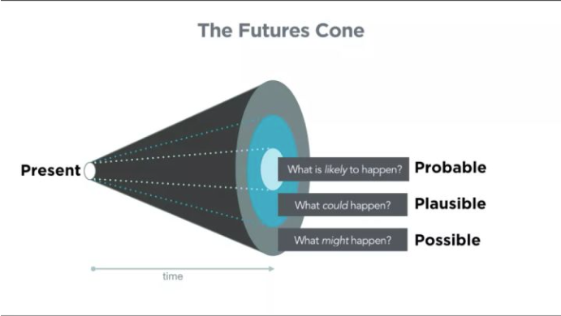
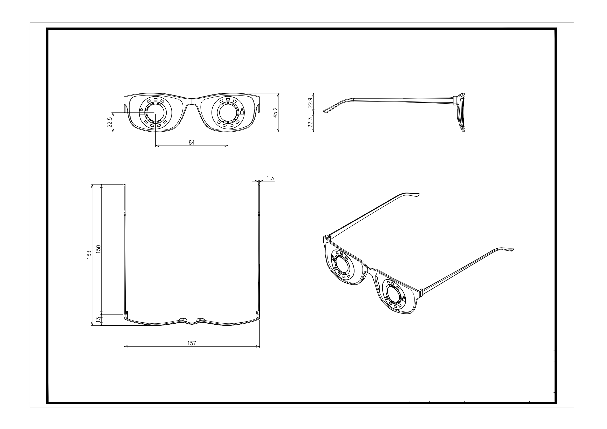
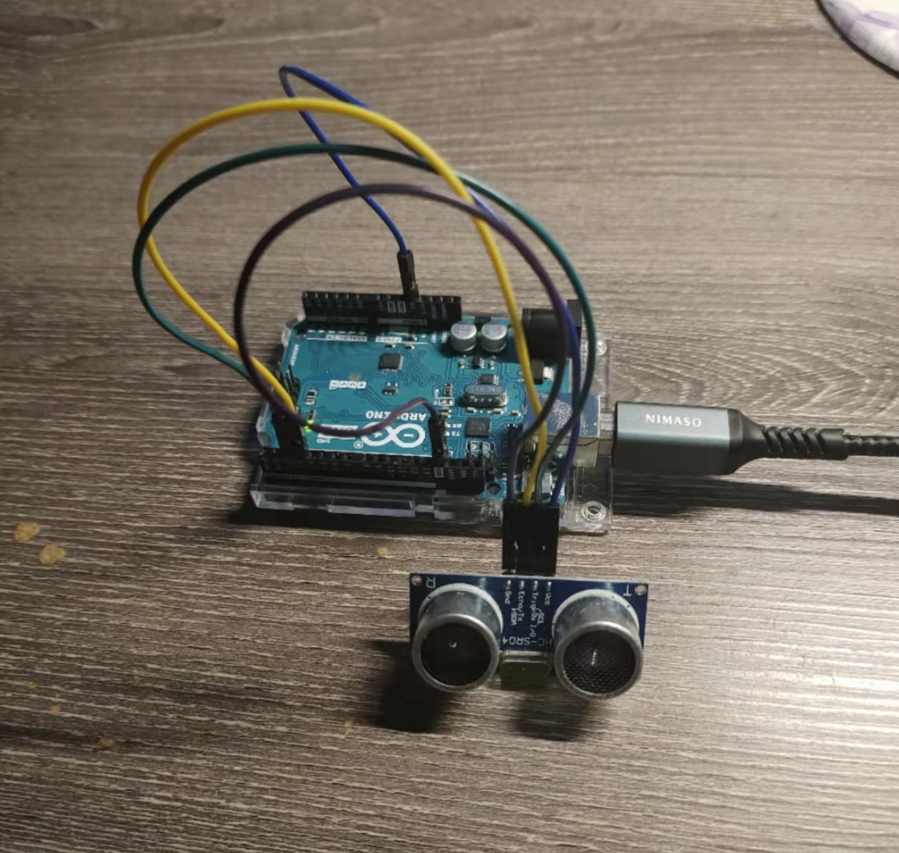
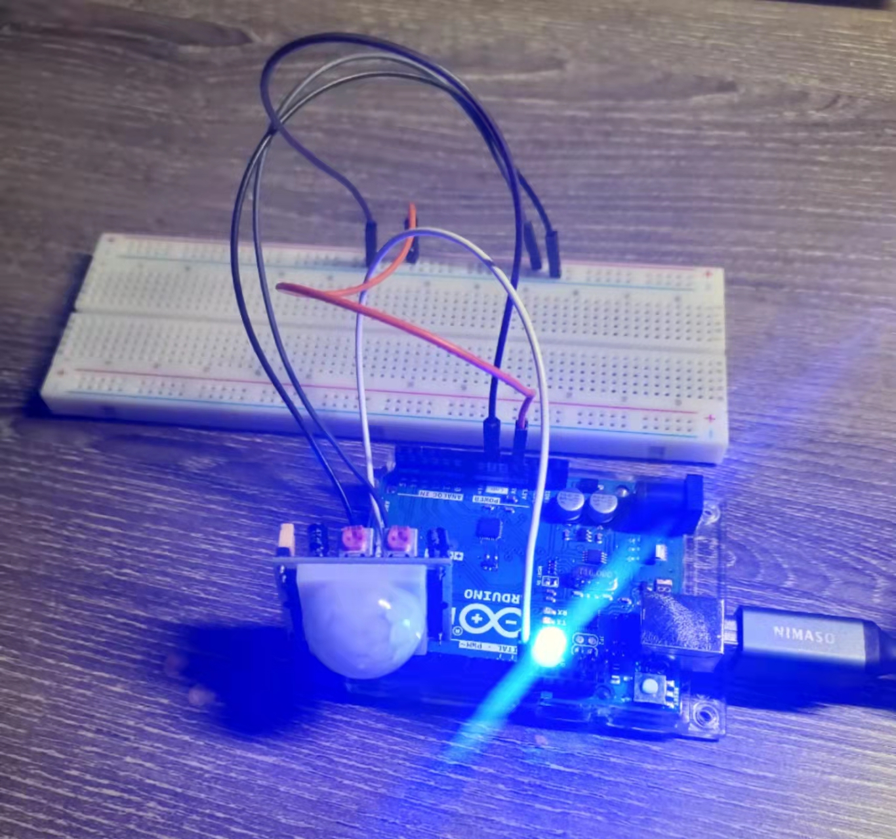
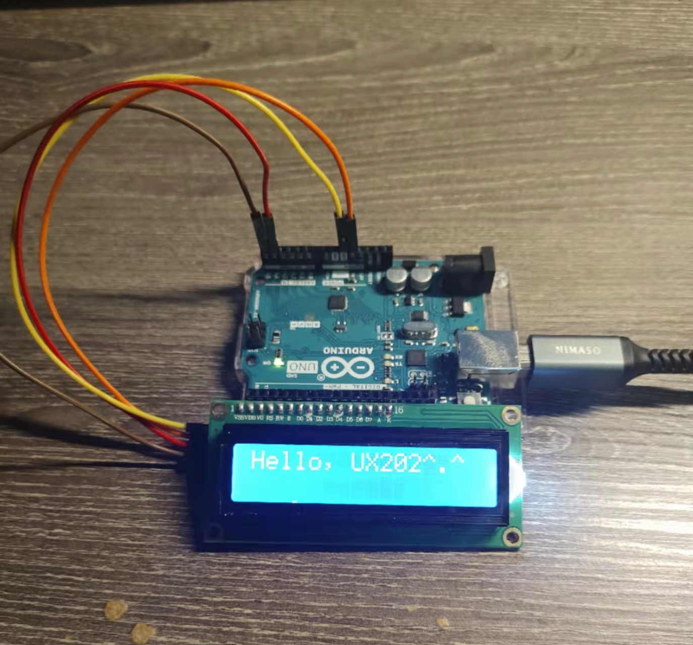
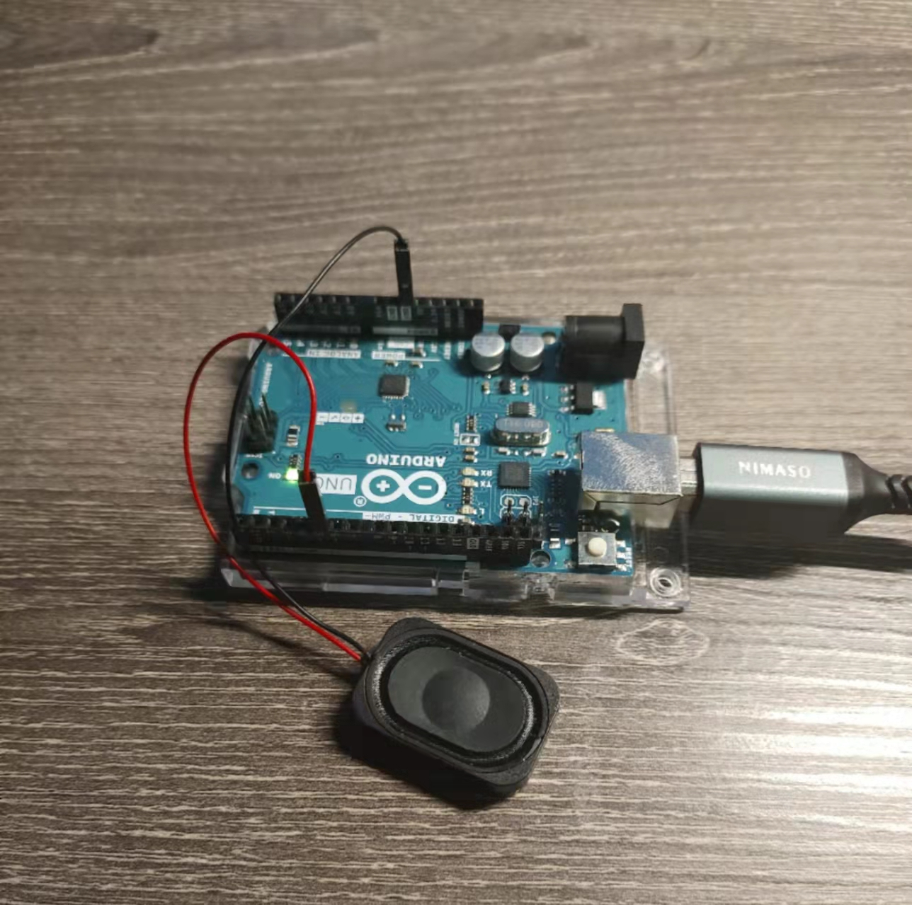
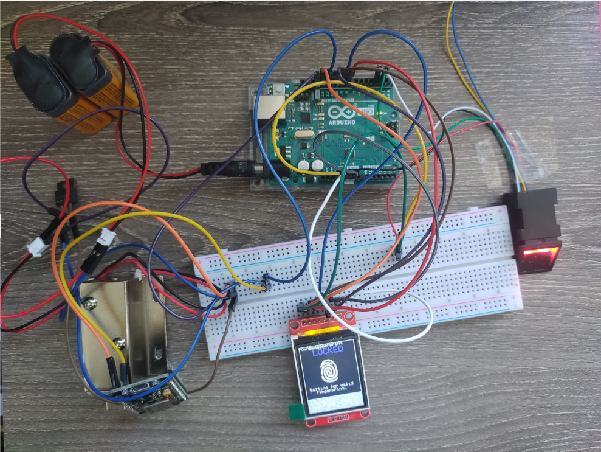
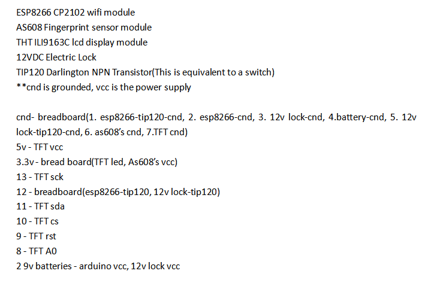

Somatic Experience
- Pselaphesia - haptic experience
- Optesthesia - visual experience
- Auditory - hearing-related experiences
- Kinaesthesia - body movement related experiences
What is speculative design？

“speculative design is a way to manifest possibilities, to prepare us for inconvenient challenges and facilitate a more desirable, responsible path into the future.”
---Central Saint Martins
In my own words, speculative design is based on the current development, relying on imagination, thinking about the possibility of the future on a macro time scale, and it can propose new plans for product research and development.
Project Showcase
We have done two projects in the form of a group.
Project 1| Clairvoyant Lens

Overview: Considering the rapid development of smart wearable devices in recent years, our first speculatively designed project is a pair of smart glasses that utilize AR technology to enhance the user's visual and auditory experience. Our design is to display identifiable information on the lens through thoughtful analysis of image technology without affecting the natural field of view. As we know, under normal circumstances, the field of view of a person is 120 degrees, and when a person is focused, the effective area of contention is only 60 degrees or less. Therefore, it is difficult to detect and respond to things outside the field of vision and emergencies. Therefore, our starting point is to solve the pain points faced by users through integrating functions.
Challenge 1: Considering the development of intelligence, wearable devices should be able to serve users from multiple perspectives in the future, so we added many difficult-to-implement functions to the product at the beginning. In prototyping, we encounter many things beyond our knowledge, such as the manipulation and processing of image technology.
Coping Strategy 1: After the later discussion, we narrowed the prototype's scope, specifically in the restraint of particular groups and basic function projects, as long as the feasibility of the function is proved.
Challenge 2: The course required us to combine a prototype with an Arduino device, so we were going to buy modular blocks that would demonstrate the capabilities of the smart glasses. The challenge is to assemble the circuit and write the code.
Coping Strategy 2: I spent dozens of hours researching this part and reading many online materials. Finally, I reduced the burden and installed the functional modules separately.




[Video Link]
- Ultraonic Module - https://youtube.com/shorts/lRH_CukjZWQ
- Motion Sensor Module - https://youtu.be/XgVi5PKUkMU
- Display Module - https://youtu.be/2SYfq7ONkVk
- Speaker Module - https://youtu.be/Nk2INrE6nN8
Project Conclusion: In this prototype demonstration, we showed four functions, human perception, distance measurement, text display and audio module. The functions are divided into four circuits for production because I am relatively unfamiliar with circuits and codes. Although I have the basis of JavaSE, although the syntax is similar, it is still somewhat challenging to understand the language logic of C. Even if I consult a lot of information, there will still be frequent failures.
Project 2| Cyber Lock
Overview: The rapid development of IoT technology in recent decades has extended digital communication technology to the physical realm. Our second speculative design project is an IoT lock that uses fingerprints and intelligent devices to unlock, replacing the original mechanical structure. After the biometric identification confirms the identity information, the data is sent to the user port through the network. The user can remotely check the opening status and history of the lock. This lock design can be placed on any device for monitoring and keeping the property safe.
Challenge: Same as project one, to use the Arduino device for prototyping, I bought a brand new module for the demonstration, so obviously, new circuit combinations and coding are waiting for me.
Coping Strategy: Although I have the experience and lessons of the first project, it still takes more than ten hours of repeated experiments to solve the errors of the code and circuit. For unfamiliar knowledge, I can't find an easier way to solve it.
[Video Link]
- Fingerprint Unlock - https://youtu.be/RFscEN8N6iw
- WiFi Unlock - https://youtu.be/2GjJn5TMh2o
Project Conclusion: We demonstrated the fingerprint recognition unlocking function and the mobile phone network unlocking process in this prototype demonstration. There are some deficiencies in the design, and I try to make up for them as much as possible. For example, the power consumption of the photoelectric module, even if I set the timed sleep mode, the working time is minimal under the condition that the 9v battery is independently powered. Furthermore, the test of the ESP8266 module has not been very smooth. In addition to the frequent errors reported by the Arduino IDE without warning, it is pretty tricky to prototype.
Personal Reflection
Through these two practical projects, the most important experience I have gained is that I can still spend a lot of time learning and meeting when faced with new things. Although I could not study systematically and comprehensively master a technology within a limited time, I still saw my perseverance and determination not to be afraid of failure. I try dozens of times for each experiment, although most of them fail. But I think this should be the case for UX designers, only continuous practice will get the desired results, and the experience of failure is not a bad thing.
**If your efforts are not recognized, someone will spend money to replace your achievements, so keep a sense of crisis at all times. . .